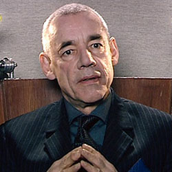

|
|
John Lumic
John Lumic was a physically disabled genius and megalomaniac who was the head of Cybus Industries on a parallel Earth. Among his many inventions were the Earpods, a highly popular and widespread communications and entertainment device that allowed the brain to directly download information while secretly equipped with a mind control program. Paralyzed and slowly dying, his life prolonged by his ventilator, Lumic was driven insane by his desperate need to stay alive and researched a means of making humans immortal by using homeless people as test subjects. This ultimately led to the creation of the parallel universe version of the Cybermen. He sent a force of Cybermen to assassinate the President and the government while having the Londoners wearing his EarPods march towards the factories to be cyber-converted. Though he intended to be the last human to be converted, the act of his employees smashing his ventilator causes Lumic to be unwillingly "upgraded" by the Cybermen into a Cyber-Controller. In his status, retaining much of his former self, Lumic engaged the Tenth Doctor in a debate over conversion before Mickey Smith disabled the Cybermens' means to control their emotions that results in their self detonation and causing the conversion factory to catch fire. Disconnecting himself to regain mobility, Lumic pursued the Doctor and his companions when they escape on his company blimp before the parallel universe Pete Tyler cuts the rope ladder, sending the Cyber Controller falling back into the blazing factory. Lumic was played by actor Roger Lloyd-Pack.
|